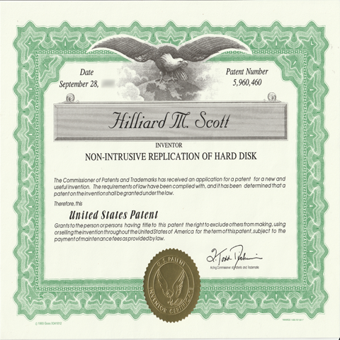

DataSonix Incorporated

As a co-founder, I was part of the engineering team that created Pereos, the world's smallest and lightest tape drive. This portable data storage device was a technological marvel, offering unprecedented data mobility and backup capabilities for the time.
Technologies: MS Server, MSSQL, OBDR (One Button Disaster Recovery), Unix, C++, .Net
Tools: TrackStar, Visual Studio, Windows Hardware Lab Kit (HLK), TortoiseSVN, SignTool, WHQL (Windows Hardware Quality Labs)
Additional Roles: Team Lead, Software Configuration Manager, Buildmeister
Award: Patent Number 5,960,460 for Non-Intrusive Replication of Hard Disk – a disaster recovery / data replication computer program ultimately implemented by the Federal Bureau of Investigations as a checking mechanism to confirm the integrity of replicated data. Also used as a means of disaster recovery of an entire computer system.
Exit: Datasonix was acquired by Exabyte for $20 million.